寓言和数学之间有很多共同点：它们都是从陈年旧书中翻出来的故事，都是大人教给孩子的道理，都试图通过简单粗暴的方式解释世界上的规律。
如果你想全面地了解生活的特质和复杂性，可以去请教生物学家、写实主义画家，或是税务员，他们更擅长讲解这些现实生活的细节。而寓言和数学的讲述者则更像漫画家，他们放大和聚焦事物的某一个方面，忽略其他所有特征，让我们更好地理解这个世界的运作方式。
本章简单使用几则数学寓言，展示烘焙、生物学和艺术的成本是如何受制于几何学的。这些故事的共同核心关乎一个基本理念，一个简单到连《伊索寓言》都忘了解释清楚的道理：尺寸很重要。1
一个巨型雕塑不仅是一个小雕塑的放大版，还是一个截然不同的物体。
有一天，我和你在一起做布朗尼蛋糕。我们兴致勃勃地搅拌着面糊，期待着即将诞生的巧克力奇迹。但在预热烤箱时，我们突然发现橱柜里竟没有合适的烤盘，唯一可以用的烤盘边长比烹饪书里建议的长一倍2。
该怎么办呢？
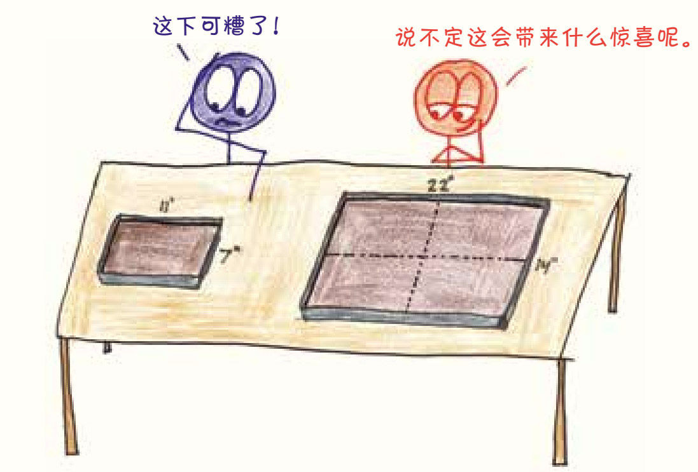
由于需要将大烤盘装满，我们打算把配方中的配料量都增加一倍。可是装着装着，我们感觉好像还是不太够，仔细研究后才发现，现在需要的配料量是原来的4倍。
这是怎么回事呢？当烤盘固定高度时，我们可以将它看作二维图形，有长也有宽。当长度翻倍后，面积也翻倍了；当宽度翻倍后，面积又翻倍了。所以，烤盘的面积实际上经过了两次翻倍，蛋糕变成了原来的4倍大，所用的配料量都要乘以4。
当你扩大任意一个矩形时，类似的情况都会发生。想把长和宽都扩大到原来的3倍？那么面积将扩大到原来的9倍。想把长和宽都扩大到原来的5倍？那么面积将扩大到原来的25倍。想把长和宽都扩大到原来的9亿倍？那么面积将扩大到原来的81亿亿倍。
或者更准确地说：当边长分别扩大至r倍时，面积将变成原先的r2倍。
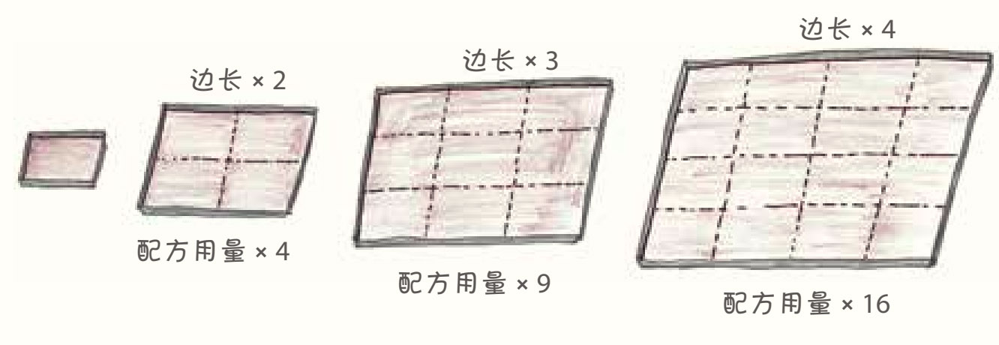
除了矩形以外，以上原理还适用于其他所有的二维图形：梯形、三角形、圆形，以及任何你可以将布朗尼面糊倒入其中的容器形状。当长度增加时，面积增加得更快。
回到厨房，我们刚准备好4倍用量的布朗尼面糊，就看到那个找了半天的小烤盘出现在橱柜的角落里。我们笑着责怪对方，但谁也没把这当回事，诱人的巧克力奇迹马上要降临了，谁还斤斤计较这点小事儿呢？
现在，我们面临一个新的选择：是用一个大烤盘还是四个小烤盘烤布朗尼呢？
这只是一个寓言，请忽略那些和主题无关的细节。别管烤箱的温度、烹饪时间、导热性能和吃完后谁来洗烤盘……你应该关注的事情只有一件，就是尺寸本身。
随着布朗尼烤盘变大，它的边缘（长度，是一维的）会增加，但是它的内部（面积，是二维的）增速更快。这就意味着，较小的形状往往是边缘所占的比例更多，而较大的形状则是内部所占比例更多。在烤布朗尼的例子中，四个小烤盘的面积与单个大烤盘的面积相同，但它们的边缘长度之和是大烤盘边缘的两倍。
因此，用小烤盘会使靠近边缘的布朗尼数量最多，而用大烤盘可以使其数量最少。
我一直不能理解那些更爱吃布朗尼边的人。谁会为了酥脆却难嚼的边缘而放弃松软绵密的中间部分呢？我只能猜测，那些人比起肉更喜欢吃骨头，比起饼干更喜欢吃饼干屑，比起止痛更喜欢药物副作用。这种人肯定在自欺欺人。所以对我来说，要么就不做，要做就要用大烤盘。
大约在2300年以前，希腊人在罗德岛击退了亚历山大大帝的进攻。人们为了欢庆这一胜利，请当地雕刻家卡瑞斯（Chares）建造一座宏伟的纪念雕像。3据说卡瑞斯最初计划建造一座15米高的青铜雕塑。罗德岛的居民说：“能不能再把雕像造得大一些呢？比如再高一倍？那要花多少钱呢？”
“当然是两倍的价钱了。”卡瑞斯回答得非常爽快。
“成交！那就再高一倍！”罗德岛居民说。
但是，随着工作的开展，卡瑞斯发现原本的经费很快就用完了。物料上的花费之多让他震惊，这远远超出了他的预算，他已经濒临破产了。据说，因为不敢面对现实，卡瑞斯选择了自尽，他终生未能看到自己设计的杰作成品。不知道在弥留之际，他有没有想明白自己错在哪儿了。
他的错误就是羞于向罗德岛居民提出涨价的要求。
想知道为什么会发生这样的事吗？先忽略所有的细节，不要纠结希腊建筑工人的劳动力价格，也别太在意青铜原料的批发价。没错，先把艺术抛之脑后，就当卡瑞斯只是在建造一个巨大的青铜立方体。我们的当务之急是弄清楚一个点：尺寸的变化。
当你将一个三维立体图形的各边长尺寸加倍时，会发生什么呢？
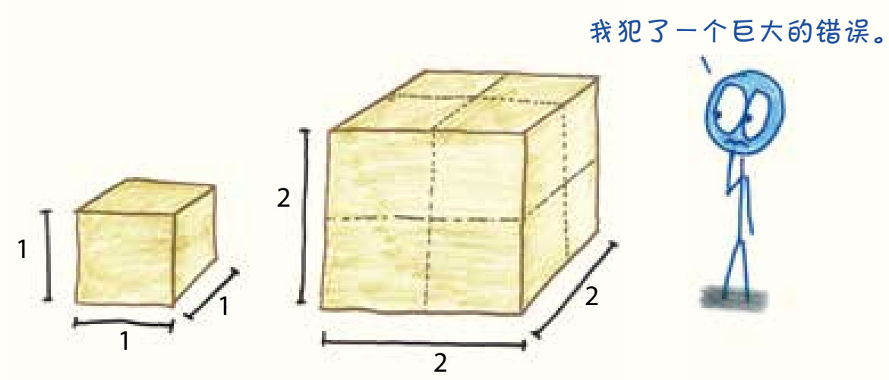
是的，让长度翻一倍后，它的体积会翻一倍；再让宽度翻一倍，体积会再翻一倍；最后让高度翻一倍，体积会第三次翻倍。这样下来，体积一共翻倍三次，这与篮球运动员的“三双”(3)意义不同：在这里，翻倍翻倍再翻倍就等于“乘以8”。
结果明明白白，而且令人吃惊：随着边沿长度的增加，体积会飞速膨胀。如果我们把正方体的边长增加到3倍，那么它的体积会增大到27倍。把立方体的边长增加到10倍，它的体积会增大到不可思议的1000倍。这个规律也适用于其他所有形状：金字塔、球体、棱镜，还有太阳神赫利俄斯（Helios）的青铜雕像（为卡瑞斯默哀）。准确地说，长度扩大r倍时，体积将扩大r3倍。
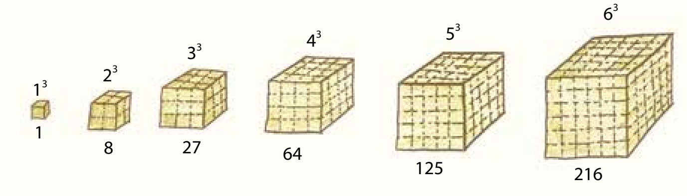
如果卡瑞斯创作的是一件一维的艺术品，比如“好长的一条罗德岛之线”之类的，那么作品的审美价值可能会受到影响，但他的报价方案刚好合适。只把长度增加一倍，不增加高度和宽度，所需的材料确实只会增加一倍。或者，如果他创作的是一幅二维的绘画作品，比如“罗德岛的巨幅肖像”之类的，那么尽管报低了价格，成本负担却还不至于那么大。一块画布的长和高各翻一番以后，面积会翻两番，那么所需要的颜料就变成了四倍。唉，不幸的是，卡瑞斯要制作的是一座三维的雕塑，雕像高了一倍，长度和宽度必然也会同时增加一倍，这样青铜材料的需求量就是原来的八倍了。
现在我们知道了，当一维的长度增加时，二维的面积会以更快的速度增加，而三维的体积的增长速度又会快得更多。作为古代世界奇迹之一的罗德岛太阳神巨像早已注定会为创造者带来悲剧的结局，原因很简单，它是一座三维立体的雕像。4
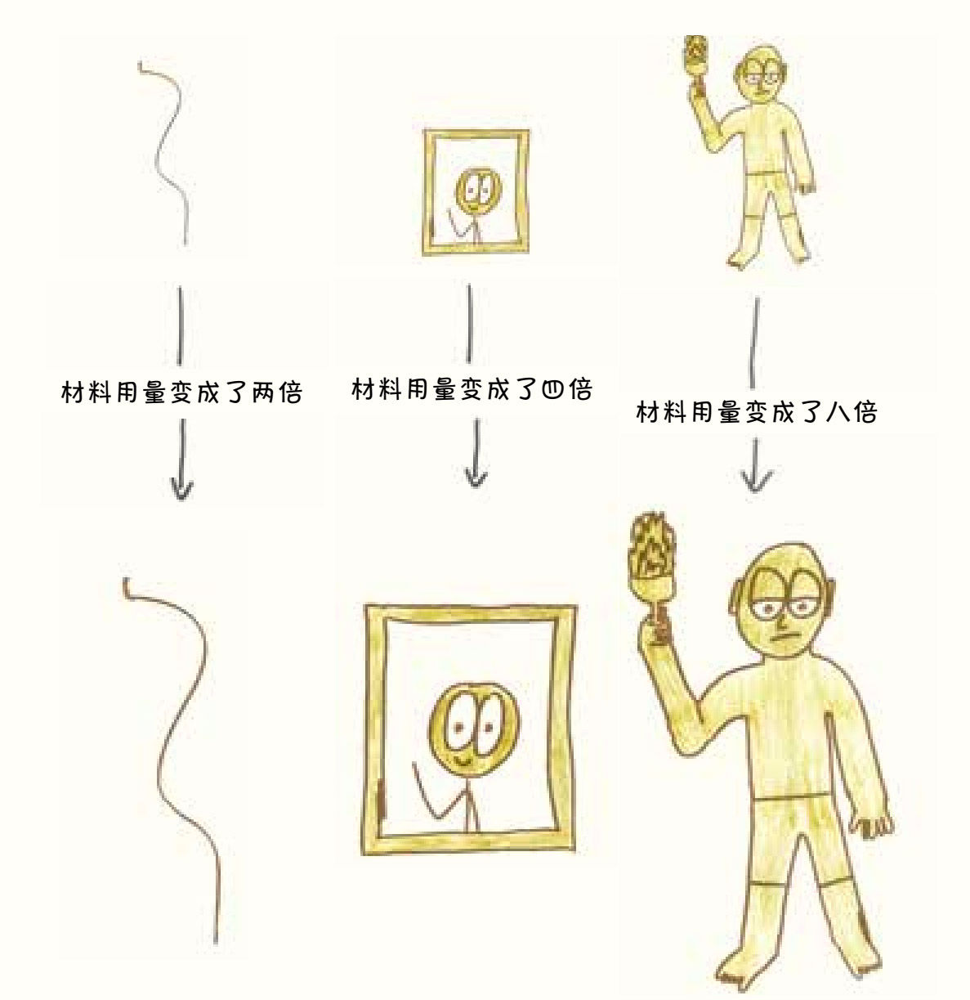
金刚是一只巨大无比的猩猩，有三层楼高；保罗·班扬是脚印大得能积雨成湖的伐木巨人；篮球运动员沙奎尔·奥尼尔高2.16米，重147千克，除了罚球之外无所不能……这些故事你都知道，你也知道他们都是幻想或传奇。世界上不存在真正的巨人。5
为什么世界上没有巨人呢？因为对生物来说，尺寸也很重要。
假设我们以“巨石”道恩·强森作为标准的人体样本，并让他的身高变成两倍，那么，随着身高、身宽和厚度的增加，强森的总体重会增加到八倍。
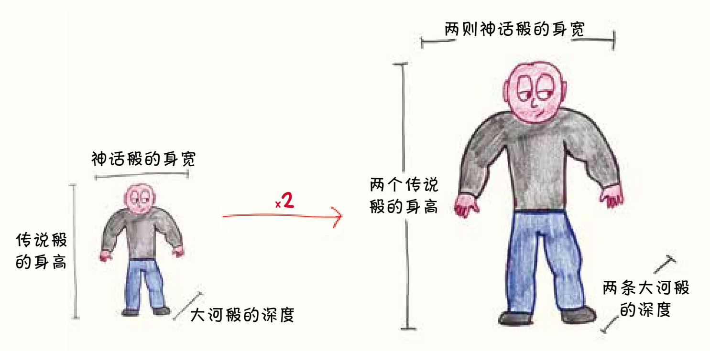
乍一看，这好像也没什么大问题。但仔细想想，如果要直立行走，他的腿骨需要承受八倍的重量，它们有这么高的强度吗？
显然没有。在强森的身高变为两倍、体积变为八倍的过程中，骨头的强度经历了两次有效的翻倍（变宽和变厚）和一次无效的翻倍（变长）。对一根柱子来说，变长是不能增加强度的，所以腿骨变长以后，强度不会增加。增加的长度不但不能提高强度，反而需要底部承受更大的重量。
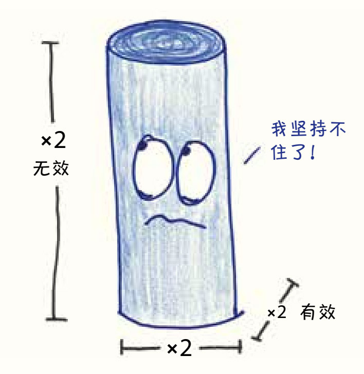
现在，道恩·强森的腿骨已经跟不上体重对它的要求了，强度是原来四倍的腿骨无法和重量是原来八倍的身体相匹配。如果我们继续让道恩·强森长高，使他的身高再增加一倍、两倍、三倍，那么不用多久，他腿骨承重就会达到极限，在躯干的重压下折断、碎裂。6
以上过程叫作等距缩放，也就是以长、宽、高等比例缩放的方式改变物体的大小。这可不是创造大型生物的好办法，我们需要的是异距缩放：让事物在尺寸放大的同时，相应地改变其内部尺寸比例。
当一种动物的身高增长50%时，它的腿需要增粗83%才能承载其身高增加带来的压力。这就是为什么猫可以靠纤细的四肢生存，而大象的腿得跟柱子一样粗壮。
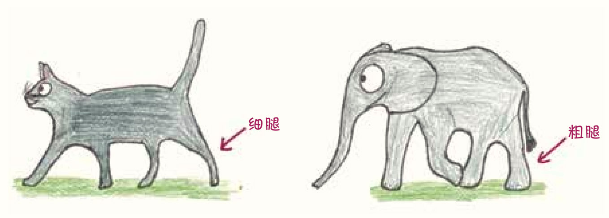
这个规律约束的不仅仅是道恩·强森，它对我们所有人同样有效，所以巨人只能生活在神话故事里。当保罗·班扬试图用脚在大地上踩出一片湖时，他的胫骨会随着沉重的步伐碎裂。金刚的骨骼和肌肉强度（与身高的平方成正比）承受不了它的体重（与身高的立方成正比），它如果还是坚持长到三层楼高，那就只能一直坐着，成为一只患有永久性心力衰竭的大猩猩。至于沙奎尔·奥尼尔，嗯，他的故事简直令人难以置信。
蚂蚁是令人毛骨悚然的动物，它们能举起相当于自身体重50倍的物体，团队工作配合得默契无间，还能在世界上的每个角落迅速繁衍。更可怕的是，这支尖下巴的举重大军成员数量是人类个体数量的100多万倍。它们异形一般的面孔简直是我的噩梦，不过好在蚂蚁非常非常小。
现在，让我们回顾一下前面那些故事里的道理：当某个物体的边长增大时，它的表面积将增长得更快，而体积的增长又比表面积的增长更快。
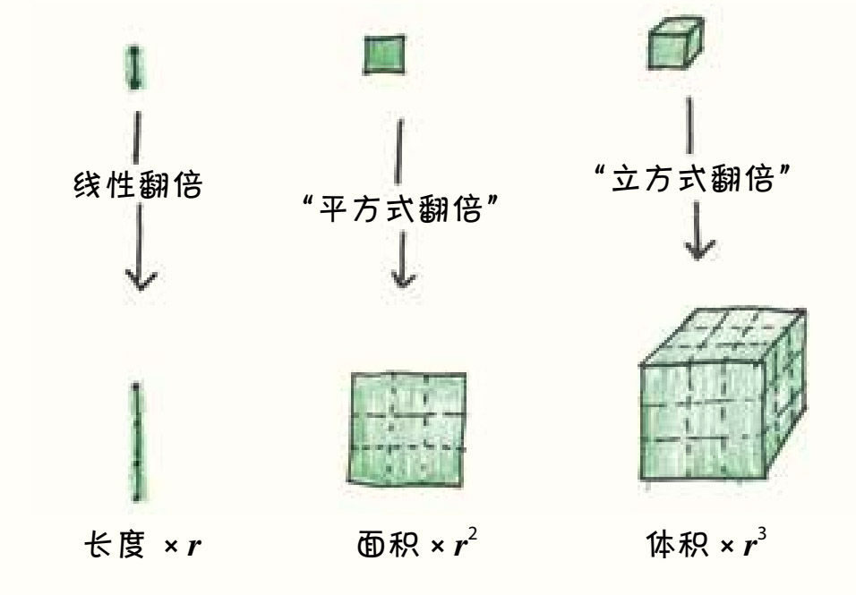
这意味着体积大的物体（比如人体）“内部更重”，每单位表面积中包裹着更多的内部体积。而体积小的物体（比如蚂蚁）则正好相反，它们“表面更大”。相较于它们微小的内部体积，蚂蚁身体的表面积是非常大的。
表面更大是什么感觉呢？首先，这意味着你再也不用畏高了。
当你从很高的地方跌落时，有两种力量在进行激烈的拔河比赛：向下的重力和向上的空气阻力。重力作用于质量，所以重力的大小和你的内部重量挂钩；而空气阻力则只在空气与你直接接触的位置起作用，所以空气阻力的大小取决于你身体表面积的大小。
简单来说，你的重量会加速你的下降，而你的表面积会减慢下降。这就是为什么抛出的砖头会坠落，而抛出的纸会飞舞，也是企鹅不会飞，但是老鹰却会飞的原因。7
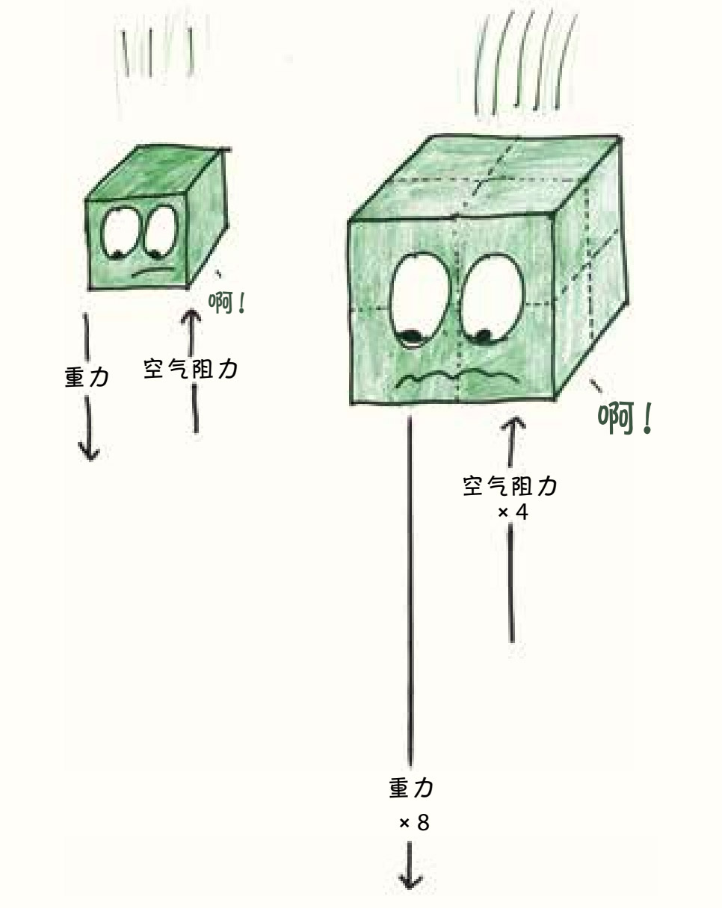
我们人类就像砖头和企鹅，重量很大，表面积不大。当我们从高空坠落时，速度最高可以达到193千米/时，以这个速度着地的结果可以说是不堪设想的。
相比之下，蚂蚁就像纸和老鹰：表面积大，重量很小。蚂蚁坠落时的速度最高只有6千米/时。因此，从理论上来说，蚂蚁只要愿意，完全可以从帝国大厦的顶部跳下来，毫发无损地稳落在人行道上，然后唱着“蚂蚁进行曲”离开跳楼现场。
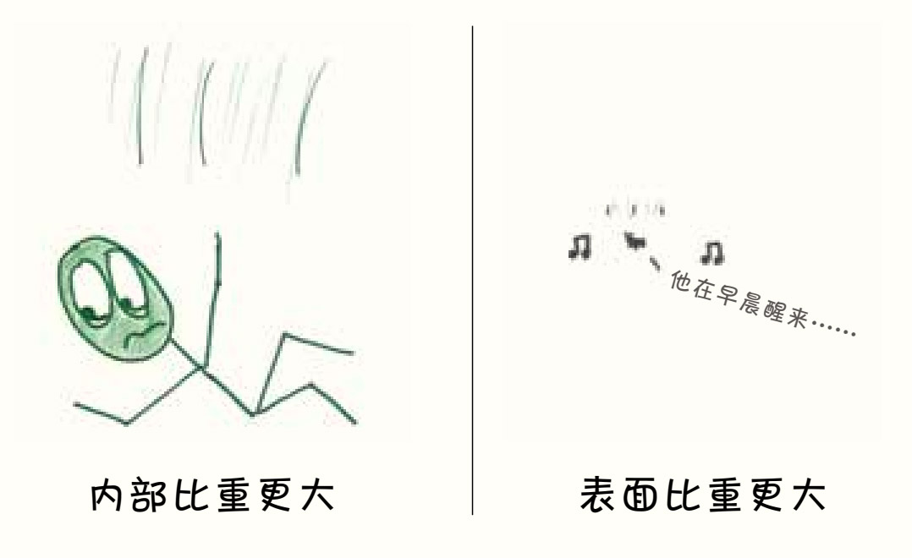
你可能会问，如果能变得“表面更大”，可以不用降落伞跳伞，是不是很有趣呢？事实并非如此，蚂蚁也是有难处的，其中一个难处就是“对水的恐惧”。
水是有表面张力的，水分子们都喜欢抱团，为了凑在一起，它们愿意克服较小的重力，这种表面张力会围困蚂蚁。任何浸泡在水中的生物在离开水面时，表面都会携带一层薄薄的水，水层大约有半毫米厚，是由表面张力固定在生物身体表面的。对我们人类来说，这太微不足道了，水层的重量只有0.5千克左右，还不到我们体重的1%，从浴缸里出来后，顺手用毛巾擦干就行。
相比之下，老鼠洗澡就痛苦多了，水层的厚度没有变，但我们的啮齿类朋友会发现这半毫米厚的水层成了非常沉重的负担。“表面更大”的老鼠从浴缸里走出来时，身上带着的洗澡水的重量和它的体重差不多。
而洗澡对于一只蚂蚁来说，简直令蚁闻风丧胆。附着在蚂蚁身体表面的水比它的身体重十倍，这可能会带来致命的危险，所以，蚂蚁对水的恐惧一点儿也不比我对蚂蚁的恐惧少8。
尽管育儿建议不断地更新和发展，但有些基本的原则从未改变：要多抱抱婴儿，为了不造成头部外伤必须用抱被把婴儿包好。人类从旧石器时代就开始用动物皮毛包裹婴儿，几千年后的今天依然如此，我相信即便世界末日到来，幸存者还是会把他们吓得嗷嗷大哭的孩子裹在婴儿抱被里。
婴儿需要抱被，因为——请原谅我用这种技术术语形容他们——婴儿的体积很小9。
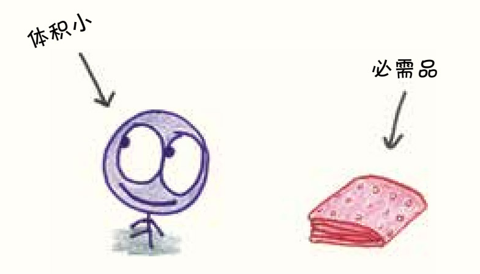
再说一次，我们得忽略那些细节：婴儿小小的还没长牙的嘴，纤细的扭来扭去的脚趾，闻起来香香的小光头。请你像对待任何生命体一样来看待婴儿：把他们看作是一堆化学反应的集合。所有生命活动都是建立在这样的反应之上的，从某种意义上来说，正是有了这些反应才有了生物。这就是动物对温度如此敏感的原因：温度过低时，这些化学反应就会慢慢停止；温度过高时，一些化学物质出现异常，导致关键的反应步骤无法进行。所以，控制好生物的体温很重要。
热量是由每个细胞内的反应产生的（也就是发自内部的），而热量是通过皮肤流失（也就是从表面流出），这就出现了一个熟悉的拔河游戏：内部与表面的拉锯战又开始了。
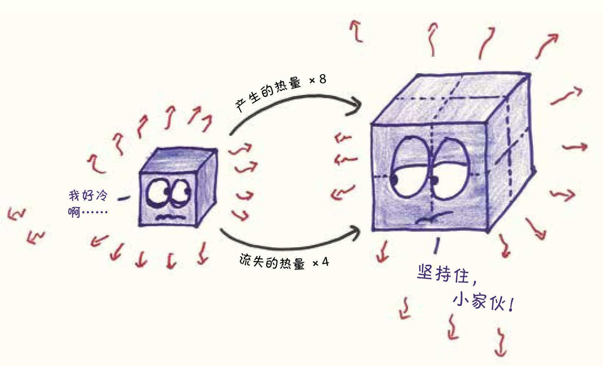
体形较大的动物，由于身体内部更重，比较容易保暖，而那些身体表面积较大的小动物则很难保暖。这就是为什么最容易挨冻的地方是皮多肉少的身体部位，比如手指、脚趾和耳朵；也解释了为什么寒冷的气候环境只适合大块头的哺乳动物，比如北极熊、海豹、牦牛、驼鹿、麋鹿，还有北美野人（就看你的动物学教授信不信他们存在了）。一只身体表面积更大的老鼠在北极是没有存活希望的，即使是在中纬度地区，老鼠也在艰难地应对热量流失，它们每天要吃相当于体重四分之一的食物，才能维持身体的热量。
婴儿的体积虽然不像老鼠那么小，但也绝对比不上牦牛。他小小的身体中，热量的消耗就像政府经费的支出般需要严格控制。为了抑制热量流失，没有比抱被更方便的选择了。
当明白了立方体里蕴藏的原理之后，你就会发现这个原理几乎无处不在。10几何规律主宰着每一个设计过程，谁都不能违背它的旨意——雕刻家、厨师、自然法则，统统不能。
连宇宙本身也不例外。
也许我最喜欢的立方体的寓言故事是“黑暗夜空悖论”11。这个故事可以追溯到16世纪，那时哥白尼刚提出了“日心说”——地球不是万物的中心，我们的地球只是一颗绕着普通恒星运行的普通行星。把哥白尼的理论引入英国的托马斯·迪格斯（Thomas Digges）则提出了更进一步的观点，他认为宇宙是无边无际的，无数恒星遥望彼此，点缀在浩瀚的宇宙中，一直延伸到无穷远。
可是后来，迪格斯意识到，如果真是这样，那么夜空应该是一片炫目灼热的白色。
想知道为什么吗？来，先戴上这副神奇的太阳镜，我叫它“迪格斯墨镜”。这款太阳镜有一个可调节的刻度盘和一个奇妙的特性：它们可以阻挡超过一定距离的光线。例如，如果把刻度设置为“3米”，那么世界上大部分地方都会变黑，阳光、月光、路灯的光——这些光都消失了，除了距离你3米以内的光源台灯和iPhone屏幕，大概也没别的了。
现在，我们把迪格斯墨镜调到“100光年”，你抬头仰望夜空时，已经看不到100光年之外的猎户座β星、猎户座α星、北极星和其他许多熟悉的天体了。剩下的星光都来自距离我们100光年以内的恒星，这些恒星的数量大约有14 000颗，现在的星空比平常要稀疏、暗淡不少。
但不管怎样，这些恒星都会有一定的亮度。我们将根据以下方程给出一个保守的估计：
打开迪格斯墨镜上的刻度盘，将距离加倍：调到200光年。部分之前消失的星星出现了，星星的数量变多了，那么现在的夜空比刚才的亮度增加了多少呢？
如果把地球看作一个点，那么在墨镜中，可见的天空就形成了一个以地球为球心，以刻度盘上设置的距离为半径的三维半球。将半径加倍后，体积就增加到了8倍。假设恒星和森林中的树木一样，是均匀分布的，那么我们现在看到的恒星数量就会是此前的8倍。它们的数量从14 000猛增到100 000以上。
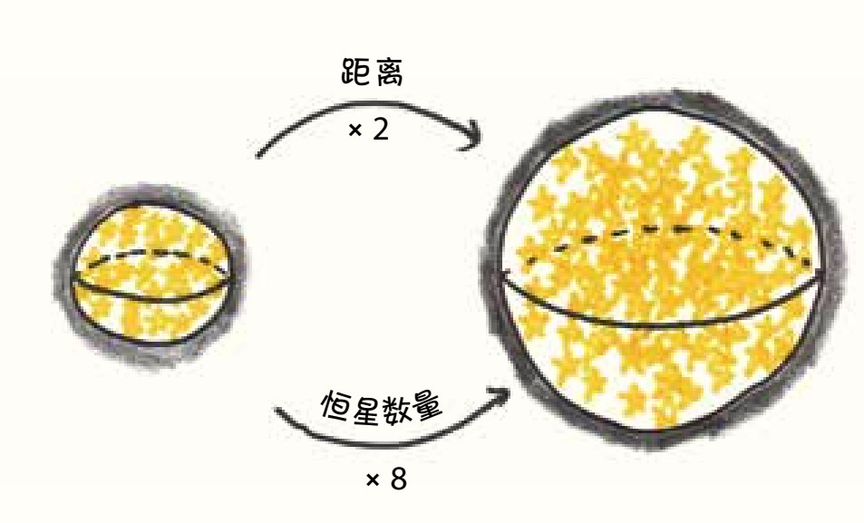
但是这些新恒星更远，这意味着它们会更暗。问题来了：距离变远后，恒星的亮度相差多少呢？
每颗在夜空中发光的星星都可以看作一个小圆形，这个圆越大，就意味着我们看到的光线越多。因为现在说的是一个寓言故事，我们可以忽略恒星之间的个性差异——它们的温度、颜色，以及是否有参宿四（猎户座α星）和勾陈一（北极星）这样酷炫的名字。我们对各位星星成员没有任何的歧视，只假设所有的星星都是一样的，唯一重要的是它们到地球的距离。
如果A星比B星到地球的距离远一倍，那么A星小圆的高度和宽度都是B星小圆的一半。这样A星小圆的面积就是B星小圆的四分之一，也就是说，A星的亮度只有B星的四分之一。
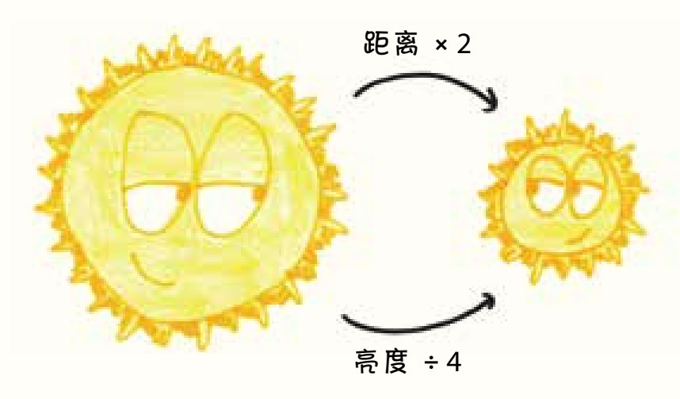
那么，在半径更大的夜空中，星星的亮度究竟有着怎样的变化呢？我们可以看到的恒星数目变成了之前的8倍，这些恒星中最暗的恒星亮度变成了原来的四分之一，8除以4等于2，根据我们的简单运算，这意味着最小总亮度增加了一倍。
所以，请调节你的迪格斯墨镜刻度，把可见距离加倍后，天空的亮度也会加倍。
“恒星的数量”是三维的，而“最暗的恒星亮度”是二维的，因此我们调节刻度时，把可见距离放得越远，天空就越亮。把可见距离调至3倍（300光年）时，夜空的亮度会是原来的3倍。把可见距离调至1 000倍以后，夜空的亮度就是以前的1 000倍。
这个亮度的变化是肉眼可见的——不，肉眼看不见，因为在这样的强光下，我们早就被亮瞎了。如果宇宙是无限的，就意味着能够看到的距离是100万、10亿、10 000亿倍，这样的亮度将是初始亮度的无穷倍。只要可视半径足够大，有星星的夜空就会比白天更亮，远远超过太阳的光芒，会把天空变成一团灼热的混沌白光。在这种无穷无尽的光芒的炙烤下，人类是无法生存的。
这时候，如果你摘下了迪格斯墨镜，整个宇宙的光芒就是极刑。12
以上的发现又带来了一个悖论，如果宇宙无限大，为什么夜空的亮度不是无限大呢？这个互相矛盾的问题持续了几个世纪。在17世纪，它一直困扰着约翰尼斯·开普勒；在18世纪，它折磨着埃德蒙·哈雷；在19世纪，埃德加·爱伦·坡在这个问题的启发下创作了一首散文诗13，尽管有些评论家持有不同意见，但他认为那是自己最伟大的作品。
直到20世纪，这个悖论才有了一个令人信服的解释。决定现在星空亮度的因素不是宇宙的体积，而是它的年龄。不管宇宙是否无限大，目前的研究已经可以肯定的是，它的年龄是有限的，诞生于不到140亿年前。所以，迪格斯墨镜无法将可见距离设置在“140亿光年”之外，因为在那之外的光还没有到达地球，所以我们无法看到。
宇宙立方体的寓言不仅是个睿智的论证过程，还成了宇宙大爆炸理论的早期证据。对我来说，这是立方体思维的典范。通过思考宇宙最简单的性质——分清二维和三维物质——我们的理解会更全面。有时候，要想看清世界的真实面貌，反而需要这种极简思路。